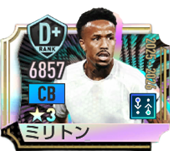
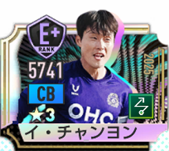
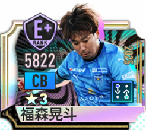

CB適性選手一覧
サカつく2026でCB適性を持つ選手63人を掲載。最大総合力、ポリシー、プレイスタイル、メイン・適性ポジション、入手可否などを比較できます。
CB適性の選手データ
該当選手数
63
メイン＋適性で判定
関連フォメコン
27
条件にCBを含む
最高最大総合力
15,770
該当選手内
最大総合力ランキング TOP10
国籍・プレイスタイル・ポリシー・入手可否で絞り込むと、条件内のTOP10へ自動更新します。
63人表示
1
ヨシュコ・グヴァルディオル
15,770最大総合力
2

パウ・クバルシ
15,731最大総合力
3

伊藤洋輝〔2026〕
15,724最大総合力
4

ウィリアム・サリバ
15,634最大総合力
5

フィルジル・ファン・ダイク
15,607最大総合力
6

ブレーメル
15,568最大総合力
7

エデル・ミリトン〔2025-2026〕
15,538最大総合力
8

アレッサンドロ・バストーニ
15,415最大総合力
9

ナタン・アケ
15,356最大総合力
10

ガブリエウ
15,350最大総合力
11

坪井慶介［J12025GOAL!DEN］
15,182最大総合力
12

マヌエル・アカンジ
15,166最大総合力
13

ダンテ
15,155最大総合力
14

渡辺剛〔2026〕
15,065最大総合力
15

フェデリコ・ガッティ
15,026最大総合力
16

森重真人［J12025歴戦の猛者］
14,971最大総合力
17

谷口彰悟〔2026〕
14,963最大総合力
18

アレクサンドロ・リベイロ
14,902最大総合力
19

塩谷司(2026)
14,754最大総合力
20

昌子源(2026)
14,750最大総合力
21

フアン・アントニオ・ロス
14,731最大総合力
22

荒木隼人(2026)
14,684最大総合力
23

根本健太(2026)
14,664最大総合力
24

ジュリアン・セレスティン
14,629最大総合力
25

藤井陽也(2026)
14,598最大総合力
26
植田直通［J12025BEST11］
14,594最大総合力
27

植田直通
14,584最大総合力
28

畠中槙之輔(2026)
14,580最大総合力
29

マテイ・ヨニッチ(2026)
14,570最大総合力
30

中谷進之介
14,557最大総合力
31

中山雄太
14,539最大総合力
32
荒木隼人［J12025BEST11］
14,534最大総合力
33

立田悠悟(2026)
14,524最大総合力
34

マリウス・ホイブラーテン
14,501最大総合力
35

岡哲平(2026)
14,501最大総合力
36

山川哲史
14,500最大総合力
37

細井響(2026)
14,470最大総合力
38
古賀太陽［J12025BEST11］
14,441最大総合力
39

鈴木義宜
14,430最大総合力
40

市原吏音
14,416最大総合力
41

古賀太陽
14,409最大総合力
42

佐々木翔
14,405最大総合力
43

谷口栄人
14,404最大総合力
44

吉住ジェラニレショーン
14,398最大総合力
45

ビョン・ジュンス
14,361最大総合力
46
ホン・ジョンホ［K12025BEST11］
14,328最大総合力
47

イ・チャンヨン
14,326最大総合力
48

岩下航(2026)
14,300最大総合力
49

菅田真啓
14,298最大総合力
50

西山大雅(2026)
14,279最大総合力
51

喜岡佳太(2026)
14,269最大総合力
52
ヤザン・アルアラブ［K12025BEST11］
14,220最大総合力
53

井上太聖
14,213最大総合力
54

キム・ヨングォン
14,194最大総合力
55

ヤザン・アルアラブ
14,188最大総合力
56

福森晃斗
14,125最大総合力
57

神山京右
14,077最大総合力
58

ゼノ・デバスト
12,337最大総合力
59

ヤクブ・キヴィオル
12,307最大総合力
60
ルベン・ディアス
12,113最大総合力
61
プジョン
11,454最大総合力
62

バルフィー
10,984最大総合力
63

ペク・ギョンス
10,979最大総合力
ポリシー別人数

カウンター
17人

リアクション
13人

ポゼッション
15人

ムービング
18人
プレイスタイル別人数

ストッパー
40人

組立CB
21人
スプリントCB
2人
CB適性を持つ全選手
メインポジションだけでなく、適性ポジションにCBを含む選手も対象です。国籍・ポリシー・プレイスタイル・入手可否で絞り込めます。
63人表示
CBを発動条件に含むフォーメーションコンボ
金金ランク
ゴーデンゾーネン'95
C026
CB / ストッパー LvⅡ以上
DM / ハードマーカー LvⅡ以上
DM / セントラルMF LvⅢ以上
DM / ハードマーカー LvⅡ以上
DM / セントラルMF LvⅢ以上
ラ・デア'22
C028
CB / ストッパー LvⅡ以上
RM / ドリブラー LvⅡ以上
CF / ラインブレーカー LvⅢ以上
RM / ドリブラー LvⅡ以上
CF / ラインブレーカー LvⅢ以上
アルビセレステ'01
C029
CB / 組立CB LvⅡ以上
LM / サイドアタッカー LvⅢ以上
CF / ストライカー LvⅡ以上
LM / サイドアタッカー LvⅢ以上
CF / ストライカー LvⅡ以上
ディアボロ・ディ・ミラノ'99
C031
CB / 組立CB LvⅡ以上
DM / セントラルMF LvⅢ以上
LW / ドリブラー LvⅡ以上
DM / セントラルMF LvⅢ以上
LW / ドリブラー LvⅡ以上
カナリア軍団'06
C045
CB / ストッパー LvⅡ以上
DM / ハードマーカー LvⅢ以上
CF / ストライカー LvⅡ以上
DM / ハードマーカー LvⅢ以上
CF / ストライカー LvⅡ以上
エンカルナードス'23
C046
CB / 組立CB LvⅡ以上
DM / セントラルMF LvⅡ以上
AM / アタッカー LvⅢ以上
DM / セントラルMF LvⅡ以上
AM / アタッカー LvⅢ以上
ロス・カフェテロス'94
C048
CB / ストッパー LvⅡ以上
DM / セントラルMF LvⅢ以上
CF / ストライカー LvⅡ以上
DM / セントラルMF LvⅢ以上
CF / ストライカー LvⅡ以上
ブラウ・グラーナ'15
C054
CB / 組立CB LvⅡ以上
AM / セントラルMF LvⅡ以上
CF / ストライカー LvⅢ以上
AM / セントラルMF LvⅡ以上
CF / ストライカー LvⅢ以上
エウスカルドゥナク'12
C056
CB / ストッパー LvⅡ以上
AM / アタッカー LvⅢ以上
CF / ストライカー LvⅡ以上
AM / アタッカー LvⅢ以上
CF / ストライカー LvⅡ以上
セレソン'70
C058
CB / スプリントCB LvⅡ以上
DM / ハードマーカー LvⅡ以上
LW / サイドアタッカー LvⅢ以上
CF / ラインブレーカー LvⅢ以上
DM / ハードマーカー LvⅡ以上
LW / サイドアタッカー LvⅢ以上
CF / ラインブレーカー LvⅢ以上
ラ・ロハ'26
C059
CB / 組立CB LvⅢ以上
LB / 攻撃的FB LvⅡ以上
LW / サイドアタッカー LvⅡ以上
RW / ワイドストライカー LvⅢ以上
LB / 攻撃的FB LvⅡ以上
LW / サイドアタッカー LvⅡ以上
RW / ワイドストライカー LvⅢ以上
銀銀ランク
太極戦士'02
C013
CB / ストッパー LvⅡ以上
LM / ドリブラー LvⅡ以上
LM / ドリブラー LvⅡ以上
ディアブル・ルージュ'18
C015
CB / 組立CB LvⅡ以上
RW / ドリブラー LvⅡ以上
RW / ドリブラー LvⅡ以上
アズーリ’06
C018
CB / 組立CB LvⅡ以上
LM / ドリブラー LvⅡ以上
LM / ドリブラー LvⅡ以上
ヴァルデ・アマレーラ'02
C019
CB / ストッパー LvⅡ以上
CF / ストライカー LvⅡ以上
CF / ストライカー LvⅡ以上
ヒノマルスタイル'68
C022
CB / ストッパー LvⅡ以上
LW / ドリブラー LvⅡ以上
CF / ストライカー LvⅡ以上
LW / ドリブラー LvⅡ以上
CF / ストライカー LvⅡ以上
イ・フリウラーニ’98
C033
GK / オーソドックスGK LvⅡ以上
CB / 組立CB LvⅡ以上
LM / サイドアタッカー LvⅡ以上
CB / 組立CB LvⅡ以上
LM / サイドアタッカー LvⅡ以上
シュヴァルツ・ゲルベン'16
C034
GK / オーソドックスGK LvⅡ以上
CB / ストッパー LvⅡ以上
RB / 攻撃的FB LvⅡ以上
CB / ストッパー LvⅡ以上
RB / 攻撃的FB LvⅡ以上
ダニッシュ・ダイナマイト'18
C035
CB / ストッパー LvⅡ以上
AM / パサー LvⅡ以上
CF / ストライカー LvⅡ以上
AM / パサー LvⅡ以上
CF / ストライカー LvⅡ以上
エル・レオン'70
C036
CB / ストッパー LvⅡ以上
AM / アタッカー LvⅡ以上
LW / ドリブラー LvⅡ以上
AM / アタッカー LvⅡ以上
LW / ドリブラー LvⅡ以上
ブルー・ガル’22
C039
CB / ストッパー LvⅡ以上
CB / 組立CB LvⅡ以上
DM / セントラルMF LvⅡ以上
CB / 組立CB LvⅡ以上
DM / セントラルMF LvⅡ以上
ラ・ロハ'02
C040
GK / オーソドックスGK LvⅡ以上
CB / ストッパー LvⅡ以上
CF / ラインブレーカー LvⅡ以上
CB / ストッパー LvⅡ以上
CF / ラインブレーカー LvⅡ以上
ロス・ミリョナリオス'86
C041
CB / ストッパー LvⅡ以上
AM / アタッカー LvⅡ以上
CF / ストライカー LvⅡ以上
AM / アタッカー LvⅡ以上
CF / ストライカー LvⅡ以上
ディー・アドラー'24
C050
CB / ストッパー LvⅡ以上
DM / パサー LvⅡ以上
CF / ラインブレーカー LvⅡ以上
DM / パサー LvⅡ以上
CF / ラインブレーカー LvⅡ以上
ブロ・グルト'94
C051
CB / ストッパー LvⅡ以上
LB / 攻撃的FB LvⅡ以上
RW / ドリブラー LvⅡ以上
LB / 攻撃的FB LvⅡ以上
RW / ドリブラー LvⅡ以上
グリーン・ファルコンズ'98
C052
CB / 組立CB LvⅡ以上
RB / 守備的FB LvⅡ以上
LM / ドリブラー LvⅡ以上
RB / 守備的FB LvⅡ以上
LM / ドリブラー LvⅡ以上
関連ツール
最終データ更新日：